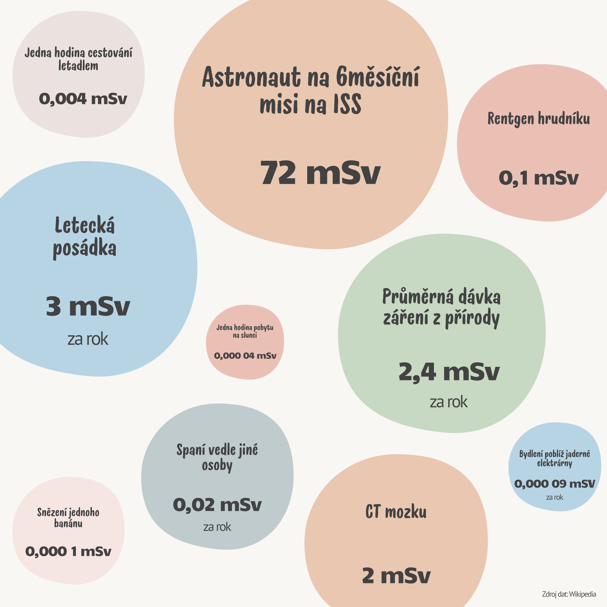
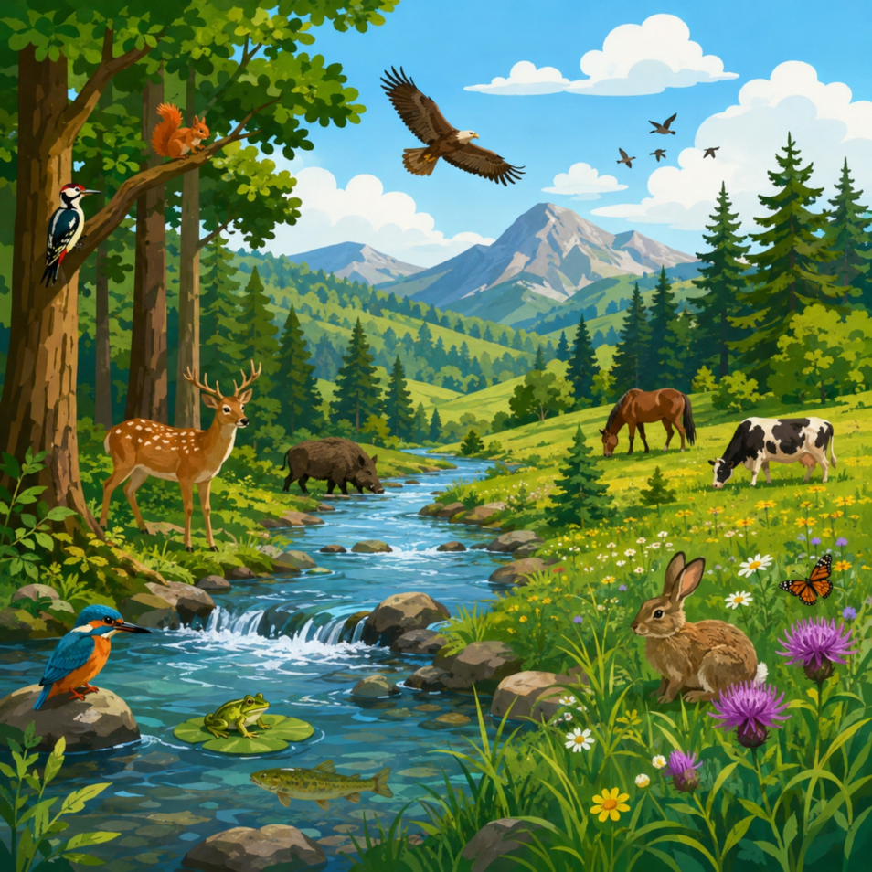

Ekosystémy se na Zemi vyvíjejí už od vzniku života, tedy po miliony let. Člověk se jejich součástí stal až před necelými dvěma miliony let, avšak po většinu této doby do prostředí téměř nezasahoval. Lidská populace byla nízká a lidé navíc neměli prostředky, které by jim umožňovaly zásadně měnit okolní přírodu.
Od 17. století ale začal počet obyvatel prudce stoupat. Hlavním důvodem byl zejména rozvoj zemědělství, díky němuž bylo k dispozici více potravy, a také zlepšování hygieny i lékařských znalostí, které omezovalo epidemie, hlavně mor. Kolem roku 1650 měla Země asi 500 milionů obyvatel, v roce 1950 už 2,4 miliardy a během dalších padesáti let dosáhl celkový počet lidí na Zemi 6 miliard. Doporučujeme se podívat na stránku Worldometers, kde najdete odhad aktuálního počtu obyvatel na Zemi.
Počet obyvatel na Worldometers ↗S rostoucím počtem obyvatel se zvyšují i nároky na potravu, spotřební zboží, bydlení, dopravu a další oblasti. To zákonitě znamená větší tlak na prostředí. Rozsáhlé odlesnění (a tedy vodní a větrná eroze a změna vodního režimu krajiny a klimatu) nastalo již během starověku, neboť docházelo k rozvoji zemědělství. Po průmyslové revoluci v 18. století se navíc rozběhla intenzivnější těžba dřeva, uhlí, ropy a rud, rozšiřovala se města, vznikala nová sídla a budovaly se komunikace i další dopravní stavby. Tyto zásahy vedly k výraznému poškození ekosystémů, k vyhubení nebo oslabení mnoha druhů organismů, ale i k šíření některých jiných druhů, například prasete, ovce, slepice, pšenice, rýže, brambor, potkana, vrabce nebo mouchy.
V posledních desetiletích se navíc projevují globální problémy, které jsou nejvážnější hlavně v rozvojových zemích. Mezi nejzávažnější patří energetická krize a populační explozerychlý nárůst počtu obyvatel, s níž souvisí i krize potravinová. Objevují se také ekologické katastrofy, například havárie tankerů, lesní požáry, kácení tropických lesů nebo rozsáhlé havárie chemických továren. Klimatické změně se věnujeme v samostatné kapitole:
Klimatická změna-
Ovzduší
Význam čistého a kvalitního vzduchu pro člověka i ostatní organismy je nesporný. Přitom se do ovzduší dostává velké množství znečišťujících látek, které výrazně snižují jeho kvalitu, poškozují rostliny i živočichy a odrážejí se také na lidském zdraví, jeho nemocnosti i úmrtnosti.
Hlavní znečišťující faktory
Do ovzduší se dostávají látky z přírodních zdrojů i lidskou činností. S tím souvisí i pojem emise. Emise označuje množství znečišťujících látek, které se ze zdroje uvolňují do ovzduší. Jejich koncentrace bývá vyšší při inverzi, tedy v údolních oblastech, kde chladný vzduch zůstává při zemi a teplejší vzduch se drží ve vyšších vrstvách, takže se škodliviny kumulují a hůře rozptylují.
Mezi významné emise patří:
- oxid siřičitý; Do ovzduší proniká při spalování fosilních paliv (např. hnědé uhlí obsahuje 5 % síry). Způsobuje kyselé deště. Poškozuje všechny složky ekosystémů, tedy vodu, půdu i organismy, a to nejen v místě vzniku, ale i dálkovým přenosem ve vzdálenějších oblastech. U člověka způsobuje např. poškození dýchacího ústrojí, dušnost, snížení imunity, u rostlin rozkládá chlorofyl a podílí se na odumírání lesů (především jehličnatých, protože na jejich jehlice působí SO2 více let), v půdě snižuje dostupnost živin. V posledních desetiletích množství SO2 vypouštěného do ovzduší v ČR klesá díky odsíření uhelných elektráren a tepláren;
- oxidy dusíku; Uvolňují se při spalovacích procesech v elektrárnách a motorech vozidel. Také způsobují kyselé deště;
- oxid uhličitý; Vzniká při všech spalovacích procesech. Pro organismy není přímo nebezpečný, pro rostliny je dokonce výživou, ale jeho rostoucí množství vede ke klimatické změně;
- další výfukové plyny jako oxid uhelnatý, uhlovodíky;
- freonyderiváty uhlovodíků
s obsahem fluoru a chlóru; Do ovzduší pronikají z hnacích plynů ve sprejích a z průmyslových zdrojů. Poškozují ozonovou vrstvu atmosféry, která filtruje ultrafialové záření. UV záření potom proniká až k zemskému povrchu a způsobuje zvýšený výskyt rakoviny kůže a nepříznivě působí i na rostliny. Freony přitom v ovzduší vydrží desítky let; - ozon; Jeho úloha v atmosféře je sice pozitivní, ale v přízemní vrstvě působí negativně na rostliny. U lidí má nežádoucí vliv na dýchací cesty a oči;
- pevné emise; Do ovzduší se uvolňují při spalovacích procesech, těžbě a úpravě surovin i při některých výrobách. Patří sem například olovo a kadmium.

Atmosféru znečišťuje také radioaktivní záření. Do prostředí se dostává z přirozených zdrojů, například z rozpadajících se radioizotopů v půdě či z kosmického prostoru, a z lidské činnosti, kdy se uvolňuje např. v medicíně či z jaderné energetiky. Na obrázku lze vidět porovnání dávek radioaktivního záření, které působí na člověka v různých situacích.
Zdroje znečištění ovzduší a možnosti řešení
Hlavními znečišťovateli jsou některá průmyslová odvětví, především energetika a hutnictví, a také doprava.
Energetika patří k odvětvím, která životní prostředí zatěžují nejvíce. Nejde jen o ovzduší, ale i o krajinu narušenou nebo zničenou těžbou surovin a ukládáním odpadů. Spotřeba elektrické energie přitom ve světě stále roste. Proto je důležité přecházet od elektráren s velkým dopadem na životní prostředí, tedy tepelných elektráren, ke šetrnějším zdrojům, které kvalitu ovzduší podstatně neovlivňují, jako jsou elektrárny jaderné, vodní, sluneční nebo větrné. Další možností je snižovat energetickou náročnost, například omezením energeticky náročných výrob, rozšiřováním úsporných strojů a spotřebičů a omezováním plýtvání energií.
Doprava zatěžuje prostředí hned několika způsoby. Kromě znečišťování ovzduší přináší vysokou energetickou spotřebu, hlučnost, výstavbu komunikací, které představují negativní krajinný prvek a omezují pohyb živočichů, a značnou spotřebu posypových materiálů. Řešením může být rozšiřování hromadné dopravy, která spotřebuje méně energie na jednoho člověka, a také změna pohonu, například směrem k elektromobilům.
Ve velkých městech bývá ovzduší znečištěné obzvlášť výrazně. Klima se zde vyznačuje teplotami i o několik stupňů vyššími než v okolí, zhoršeným prouděním vzduchu a častými inverzemi. Proto je důležité, aby se plánovaly nové městské celky s ohledem na rozmístění obytných, průmyslových a rekreačních ploch, aby byla regulována doprava, např. odkloněním dálkové dopravy mimo města, a aby byla vysazována zeleň.
-
Voda
Dostatek kvalitní vody patří k nepostradatelným životním potřebám. Znečištění vody se týká nejen sladkovodních zásob, ale i moří a oceánů.
Hlavní znečišťující faktory
Zdrojem lokálního znečištění jsou odpadní vody vypouštěné z lidských sídel a průmyslových podniků. Plošné znečištění vzniká splachy hnojiv a pesticidů z polí; ty pronikají do vody povrchovým odtokem i průsakem do spodních vod. K nejnebezpečnějším chemickým látkám, které mohou vodu znehodnotit, patří:
- ropa; Zvlášť nebezpečné jsou havárie velkých tankerů na mořích, při nichž se na hladině tvoří ropné skvrny. Ty znemožňují výměnu plynů mezi vodou a vzduchem, brání fotosyntéze mořských řas a dusí či otravují mořské živočichy;
- detergentyčistící a mycí prostředky; Obsahují látky jedovaté pro vodní organismy a často vytvářejí na hladině pěnu, která brání výměně plynů;
- hnojiva a pesticidy; Do vody se dostávají hlavně splachem z půdy. Fosforečnany obsažené v hnojivech vyvolávají eutrofizacizvýšení hladiny živin ve vodě,
které vede k rychlému růstu
vodních rostlin a snížení kyslíku vody, kdy se rychle rozvíjejí vodní řasy a sinice a po jejich odumírání se uvolňují toxické látky a prudce klesá množství kyslíku ve vodě. Dusičnany z hnojiv se mohou dostat do pitné vody a způsobovat rakovinu trávicího ústrojí. Přitom se v úpravnách vod dusičnany z vod běžnou technologií neodstraní; - těžké kovy; Působí toxicky na organismy a komplikují úpravu pitné vody
Velkým problémem jsou také plasty. Jen do oceánů se každý rok dostane 14 milionů tun plastů, které se seskupují do ploch utvářených oceánskými proudy. Plasty tak (společně s dalšími odpady) tvoří tzv. Velkou tichomořskou odpadkovou skvrnu. Leží v severním Pacifiku a ohrožuje mořské živočichy i celý oceánský ekosystém.
Kromě chemického znečištění působí na vodu i fyzikální faktory:
- radioaktivní záření; Pochází z radioaktivních látek, které v prostředí přetrvávají jako následek pokusných jaderných zbraní z padesátých a šedesátých let, a i po havárii v jaderné elektrárně v Černobylu;
- tepelné znečištění; Jeho zdrojem je odpadní teplo z chladicí vody jaderných a tepelných elektráren, z hutí a dalších průmyslových provozů. Zvýšení teploty snižuje ve vodních tocích obsah kyslíku, a tím poškozuje některé organismy. Teplá voda navíc svým zvýšeným výparem přispívá k místním změnám klimatu;
- mechanické znečištění; Jde o různé mechanické částice, které sice nejsou toxické, ale způsobují zanášení vodních toků a ucpávání potrubí a filtrů v úpravnách vod.
Zdroje znečištění vody a možnosti řešení
Voda má určitou samočisticí schopnost, kterou za při určitých chemických a fyzikálních faktorů zajišťují bakterie, řasy, vodní organismy a kořeny rostlin. Činnosti bakterií se využívá i v čistírnách odpadních vod, kde za přísunu kyslíku rozkládají látky. Všechny škodlivé látky ale nedokáží odstranit čistírny odpadních vod, a proto třeba omezovat vypouštění nebezpečných látek a ve výrobcích nahrazovat ekologicky škodlivé látky jinými.
K velkému producentu kontaminujících láteklátky znečišťující prostředí patří zemědělství. K největším zdrojům znečištění vody z této oblasti patří velkochovy hospodářských zvířat, úniky silážních šťáv a nesprávné dávkování hnojiv. Jak uvedené negativní dopady naznačují, řešením je zabránit pronikání zbytků pesticidů a silážních šťáv do povrchových i spodních vod, dávkovat hnojiva rozumně a věnovat zvýšenou pozornost oblastem, které slouží jako zdroje pitné vody.
Další zdroj představují průmyslová odvětví, která potřebují velké objemy vody, například těžba a zpracování ropy a uhlí, výroba kovů a papíru, chemický a potravinářský průmysl. Zabránit znečištění lze využíváním moderních technologií s uzavřeným oběhem vody a kvalitním čištěním veškerých odpadních vod.
Změny vodního režimu krajiny
V 19. a 20. století člověk do vodních poměrů v krajině zasahoval velmi výrazně. Některé oblasti vysoušel, jiné zavlažoval, napřimoval (zkracoval) a reguloval vodní toky. V Koryta bývala často vybetonována a břehové porosty vykáceny. Ekonomicky šlo o náročné zásahy, které však v důsledku zhoršily vodní poměry v krajině a ochudily společenstva po biologické stránce. Zrychlil se odtok vody z krajiny, půdy se po deštích rychleji vysušují (po deštích voda rychleji odtéká pryč), častěji se objevují záplavy a silně se omezuje samočisticí schopnost vody i její okysličování.
Do původního stavu už krajinu ani vodní toky vrátit nelze. Je však potřebné napravovat dřívější negativní zásahy a nové úpravy provádět citlivě, v souladu s ekologickými pravidly. Především je vhodné omezit regulace vodních toků na nezbytnou míru, zakládat souvislé břehové porosty, chránit mokřady (patří k důležitým stabilizačním prvkům) a přehrady, jezy i další vodní díla budovat uvážlivě.
-
Půda
Půda se skládá z neživé složky, kterou tvoří zvětralá hornina, voda a vzduch, a z živé složky, tedy edafonu – bakterií, hub, rostlin a živočichů. Edafon je pro půdu nepostradatelný, protože bez něj by půda ani nevznikla a nedokázala by si udržet své vlastnosti. Působí na něj však řada negativních vlivů, čímž se výrazně snižuje úrodnost půdy. Kvůli jeho likvidaci se navíc v půdě přestává tvořit humus.
Kromě znečištění dochází také k tzv. erozi a zhutňování půd. Eroze znamená rozrušování a odnos půdy působením vody a větru. Zhutnění půd způsobují pojezdy těžkých strojů po polích a další faktory. Zhutněná půda pak po deštích hůře vsakuje vodu a zároveň se méně provzdušňuje.
Hlavní znečišťující faktory
Znečišťující látky se do půdy dostávají buď přímo, nebo ze vzduchu a dešťové vody. Patří sem:
- hnojiva; Přiměřené množství hnojiv využívají zemědělci ke zvýšení výnosů. Negativně působí až tehdy, když jsou použita v nadměrném množství. V takovém případě se v půdě nezadrží a dochází k jejich vyplavování do vod;
- pesticidy; Jejich hromadění v organismech poškozuje živočichy stojící výše v potravní pyramidě (ptáci, člověk...). V půdě navíc zůstávají jejich zbytky dlouhodobě;
- jiné kontaminanty; Do půdy pronikají ze vzduchu, například těžké kovy, oxid siřičitý nebo oxidy dusíku.
Zdroje znečištění půdy a možnosti řešení
Znečišťující látky pocházejí z různých odvětví hospodářství a z odpadů lidských sídel. Hlavním znečišťovatelem půdy je zemědělství. Problém představuje zejména pěstování monokulturpěstování jedné druhu
rostliny na stejné ploše
po několik let, při němž se půda jednostranně vyčerpává, což dává možnost škůdcům rychle se šířit. Dalším problematickým faktorem je pěstování na velkých plochách. Na menších zemědělských plochách se snižuje riziko eroze a šíření škůdců, krajina je navíc pestřejší, může obsahovat více různé zeleně a nabízí tak větší prostor pro ptáky, hmyz apod. Ve výsledku zemědělství výrazně proměnilo krajinu, a to jak její celkový ráz, tak schůdnost, protože zmizely cesty, pěšiny i meze.Řešení souvisejí s celkovou ekologizací zemědělství. Hlavní úkoly lze shrnout do těchto oblastí:
- Obnovení a udržení ekologické stability krajiny: vhodná rozloha polí, zvětšení ploch trvalých travních porostů, obnova biokoridorů a správné střídání plodin.
- Produkce zdravotně nezávadných potravin: dávkovat hnojiva tak, aby je rostliny dokázaly využít a nedocházelo k zatěžování půdy a vody, omezit pesticidy jen na nezbytné případy a více rozvíjet biologickou regulaci škůdců, například pomocí dravců, hmyzožravých ptáků a bakterií.
- Dosažení vyrovnaného stavu půdy: chránit půdu před vyčerpáním a snižováním obsahu humusu, upravovat vodní poměry tak, aby nedocházelo k odvodňování, a bránit erozi.
- Dodržování biologických a etických principů chovu hospodářských zvířat: snížit počty ve velkochovech, používat kvalitní krmiva aj.
-
Další problémy
V posledních desetiletích prudce roste produkce odpadů. Přibývá zejména odpadů biologicky neodbouratelných, například plastů nebo ropných látek. Ideálním řešením je vzniku odpadů předcházet, podporovat výrobky s dlouhou životností a odpady správně zpracovávat, tedy recyklovat kovy, plasty, sklo, papír i elektroniku, případně organické odpady kompostovat nebo je využít jako energii spalováním ve spalovnách. Nejhorší možností je skládkování odpadů. Více o odpadech a odpadovém hospodářství naleznete v přiloze:
Otevřít zde (pdf)
Otevřít na nové kartě (pdf) ↗Dalším problémem je poškození lesů, které je způsobeno emisemi. Potíže může vyvolávat i nevhodná skladba vysazovaných porostů. Typickým příkladem jsou smrkové monokultury, které tvoří nestabilní ekosystém a snadno podléhají škůdcům (viz kůrovec). Velmi vážný problém je kácení tropických deštných lesů, kvůli němuž vymírají živočišné i rostlinné druhy. Velké škody působí také požáry. Je proto důležité snižovat emise, dodržovat šetrnou těžbu a vytvářet stabilní lesní ekosystémy.
Také hluk je významným problémem. Vzniká především v dopravě. Omezit jej lze například odklonem hlavních dopravních tras od obydlených center, upřednostňováním nízkohluových dopravních prostředků a výstavbou zvukových bariér, tedy protihlukových stěn a přirozených stromových/keřových pásů.
Jak vyplývá z předchozích částí, člověk vytváří na přírodu značný tlak a ohrožuje tím řadu druhů rostlin i živočichů. Je nutné chránit vybrané druhy a území, ale také chránit i základní složky životního prostředí, tedy vodu, vzduch a půdu
-
Ochrana přírody ve světě
Mezi instituce zabývající se ochranou přírody ve světě patří například:
- Mezinárodní unie pro ochranu přírody a přírodních zdrojů (IUCN): vydává Červené knihy ohrožených živočichů a rostlin,
- Světový fond pro ochranu přírody (WWF),
- Program Spojených národů v oblasti životního prostředí (UNEP)
Po celém světě vznikají rezervace, národní parky a další chráněná území, aby byl zachráněn celý ekosystém nebo silně ohrožený druh. K nejznámějším patří například Yellowstonský národní park v USA, Galapágy v Ekvádoru nebo Velký bariérový útes v Austrálii.
Druhy vznikají dlouhým vývojem, který trvá statisíce až miliony let. Zásahy způsobené člověkem jsou naopak náhlé a mohou vést k vyhubení druhů už během několika let. K vyhubení může dojít nadměrným lovem živočichů či sběrem rostlin, změnou biotopů, silným znečištěním prostředí i zavlečením nepůvodních druhů do ekosystému. Mezi ohrožené druhy a poddruhy patří například:
- panda velká,
- kůň Převalského,
- orangutan bornejský,
- krokodýl siamský,
- gorila horská,
- nosorožec tuponosý severní: na celém světě zbývají už jen 2 jedinci, narození v Zoo Dvůr Králové, viz dokument Poslední nosorožec.
Příkladem úspěšné ochrany téměř vyhubených druhů je udržení a rozmnožení populací antilopy sajgy tatarské ve stepích střední Asie nebo bizona lesního v prériích amerického Středozápadu.
Snazší bývá zachraňovat ohrožené druhy rostlin, protože je lze lépe pěstovat, množit a uchovávat jejich semena.
-
Ochrana přírody v ČR
V České republice se ochrana přírody opírá o činnost státních institucí, odborných organizací i nevládních spolků. Jejich úkolem je chránit přírodní bohatství země, předcházet poškozování životního prostředí a pečovat o zachování biologické rozmanitosti pro budoucí generace. O ochranu přírody se u nás starají:
- Ministerstvo životního prostředí,
- Česká inspekce životního prostředí,
- Greenpeace ČR,
- Duha aj.
Činnost těchto institucí vychází z právních předpisů, které určují pravidla ochrany přírody a krajiny i jednotlivých složek životního prostředí. Ochrana přírody je v České republice zakotvena v Ústavě a v Listině základních práv a svobod a podrobně ji upravují další zákony.
Legislativa na ochranu přírody v ČR
- Zákon o ochraně přírody a krajiny (114/1992): Tento zákon upravuje ochranu přírody a krajiny, stanovuje postupy a způsoby ochrany přírodních památek, chráněných krajinných oblastí a biosférických rezervací, řídí hospodaření s přírodními zdroji, stanovuje ochranu volně žijících živočichů a rostlin a upravuje odpovědnost za porušení zákona. Účelem zákona je za účasti příslušných krajů, obcí, vlastníků a správců pozemků přispět k udržení a obnově přírodní rovnováhy v krajině, k ochraně rozmanitostí forem života, přírodních hodnot a krás, k šetrnému hospodaření s přírodními zdroji. Přitom je nutno zohlednit hospodářské, sociální a kulturní potřeby obyvatel a regionální a místní poměry.
- Zákon o ochraně ovzduší: Ochranou ovzduší se rozumí předcházení znečišťování ovzduší a snižování úrovně znečišťování tak, aby byla omezena rizika pro lidské zdraví způsobená znečištěním ovzduší, snížení zátěže životního prostředí látkami vnášenými do ovzduší a poškozujícími ekosystémy a vytvoření předpokladů pro regeneraci složek životního prostředí postižených v důsledku znečištění ovzduší.
- Zákon o odpadech: Účelem tohoto zákona je zajistit vysokou úroveň ochrany životního prostředí a zdraví lidí a trvale udržitelné využívání přírodních zdrojů předcházením vzniku odpadů a nakládáním s nimi v souladu s hierarchií odpadového hospodářství. Tento zákon zapracovává pravidla pro předcházení vzniku odpadu a pro nakládání s ním, práva a povinnosti osob v odpadovém hospodářství a působnost orgánů veřejné správy v odpadovém hospodářství.
- Zákon vodách: Účelem tohoto zákona je chránit povrchové a podzemní vody a stanovit podmínky pro hospodárné využívání vodních zdrojů. Dále zákon řeší také podmínky pro snižování nepříznivých účinků povodní a sucha a zajištění bezpečnosti vodních děl. Účelem tohoto zákona je též přispívat k zajištění zásobování obyvatelstva pitnou vodou a k ochraně vodních ekosystémů a na nich přímo závisejících suchozemských ekosystémů.
- Zákon o lesích: Účelem tohoto zákona je stanovit předpoklady pro zachování lesa, péči o les a obnovu lesa jako národního bohatství, tvořícího nenahraditelnou složku životního prostředí, pro plnění všech jeho funkcí a pro podporu trvale udržitelného hospodaření v něm.
Zákony procházejí novelizacemi, které vycházejí ze současného stavu našeho i světového prostředí. Na tyto zákony navazuje řada vyhlášek a dílčích zákonů, které upravují např. limity vypouštěných látek, poplatky a pokuty za znečišťování.
Právě na základě těchto zákonů se v České republice uplatňuje obecná a zvláštní ochrana přírody a krajiny.
- Obecná ochrana přírody je taková, že všechny druhy rostlin včetně hub a živočichů jsou chráněny před zničením, poškozováním, sběrem či odchytem, který vede nebo by mohl vést k ohrožení nebo vyhubení. Je také zakázáno ničit jejich ekosystémy. Při porušení těchto podmínek je orgán ochrany přírody oprávněn rušivou činnost omezit stanovením závazných podmínek (např. udělit pokutu). Ochrana se nevztahuje např. na zásahy při hubení.
- Zvláštní ochranu přírody dělíme na ochranu druhovou a územní:
- Kategorie druhové ochrany (zvláště chráněné druhy):
- kriticky ohrožený druh (koniklec jarní, medvěd hnědý, vlk)
- silně ohrožený druh (leknín bílý, slepýš křehký, čáp černý)
- ohrožený druh (dřín obecný, ropucha obecná, veverka obecná)
Seznam ohrožených druhů je uveden ve vyhlášce.
- Kategorie územní ochrany (zvláště chráněná území v Česku):
- Národní parky
- Chráněné krajinné oblasti (Beskydy, Jeseníky, České středohoří)
- Národní přírodní rezervace (Praděd)
- Přírodní rezervace (Kamenný vrch, Svatý kopeček)
- Národní přírodní památky (Pravčická brána)
- Přírodní památky (Žebětínský rybník)
Národní parky
Národní parky jsou velkoplošně chráněná území s největším stupněm ochrany. Jsou členěny do 4 zón.
- Zóna 1 znamená nejvyšší způsob ochrany, v podstatě zachování volné přírody bez zásahů člověka. Jde o území člověkem téměř nedotčené a je snaha toto zachovat. Proto je do těchto oblastí omezený vstup například skrz vyznačené povolené stezky.
- Zóna 2 znamená území, kde člověk minimálně zasahuje, turistické cesty jsou řídké. Jsou zde významné a jedinečné ekosystémy, důraz je v nich kladen na regulaci šetrné péči a obhospodařování.
- Zóna 3 je území s hospodářským lesním využitím, těží se dřevo, vysazují stromky, dokrmuje zvěř. Turistické cesty jsou hustší.
- Zóna 4 představuje komerční zónu s hotely, stánky, parkovišti, dětskými atrakcemi, půjčovnami kol, koloběžek.
České národní parky jsou: Krkonoše (nejstarší), Šumava (největší), Podyjí (nejmenší), České Švýcarsko (nejmladší).
Mapa zvláště chráněných území ↗
- Kategorie druhové ochrany (zvláště chráněné druhy):

Podle intenzity vlivu člověka existuje krajina přírodní a kulturní.
- Přírodní krajina: Její podobu určují hlavně přírodní vlivy, působení člověka je jen nepatrné (dálkový přenos emisí). Patří sem krajiny bez hospodářského využití, jako jsou polární oblasti, vysokohorské krajiny, tundry, horské louky, tajga nebo tropické lesy.
- Kulturní krajina: Jde o krajinu přetvořenou člověkem pro určitý účel. Podle míry přeměny může jít o oblasti s menší hustotou obyvatel,
kde člověk ještě nezničil regulační schopnost krajiny, o oblasti se zemědělským využitím, komunikační sítí nebo průmyslovými objekty, i o krajiny výrazně
přeměněné urbanizacísoustředění obyvatel a
hospodářského i kulturního
života do měst (domy, ulice, regulované vodní toky) a průmyslovou činností (továrny, doly).
Stabilní krajina je ekologicky vyvážená a tvořená stabilními ekosystémy. Obsahuje biocentra s vysokou druhovou pestrostí, například lesy, rybníky nebo mokřady, a biokoridory, které jednotlivá biocentra propojují a umožňují migraci mezi nimi, například břehové porosty, meze nebo stromořadí.
Trvale udržitelný rozvoj je způsob fungování společnosti, který naplňuje potřeby dnešní generace, aniž by ohrozil možnost budoucích generací žít plnohodnotný život. Nejde o pouhou ochranu přírody. Spojují se v něm ekologické, ekonomické, technologické a sociální pohledy na životní prostředí. Cílem je zlepšovat životní úroveň lidí, ale nepřekračovat přitom možnosti naší planety. V praxi to znamená využívat moderní a šetrné technologie, hospodařit odpovědně a dbát na spravedlivá společenská pravidla.
Celé toto úsilí stojí na třech základních pilířích: ekologickém, ekonomickém a sociálním. Tyto oblasti v této podobě jasně popsal například Sociální summit v Kodani v roce 1995.
- Ekologický pilíř se zaměřuje na snižování znečištění, ochranu rozmanitosti přírody a šetrné využívání zdrojů
- Ekonomický pilíř řeší stabilní hospodářství, které respektuje přírodní limity.
- Sociální pilíř klade důraz na lidská práva, rovný přístup ke vzdělání a spokojenost lidí.
Pouze rovnováha mezi těmito třemi směry dokáže dlouhodobě zabránit chudobě, společenskému napětí nebo ničení životního prostředí.
Hlavním celosvětovým plánem pro uskutečnění těchto vizí je Agenda 2030, kterou v roce 2015 přijala Organizace spojených národů. Její nejdůležitější část tvoří 17 Cílů udržitelného rozvoje. Tyto konkrétní závazky sahají od odstraňování chudoby a hladu pres rozvoj čistých technologií až po ochranu klimatu. Hlavní myšlenkou je nenechat nikoho stranou a vytvořit bezpečný a prosperující svět pro současné i příští generace.
Zajímavost k pesticidům:
Pesticidy byly téměř příčinou vyhynutí sokola stěhovavého v polovině 70. let. Jeho stavy tehdy klesly o 80 až 90 % a sokol byl veden jako ohrožený druh s nebezpečím vyhynutí. Pokles početnosti byl zaznamenán i u dalších dravců. Hlavní problém spočíval ve vajíčkách, která se v hnízdě snadno rozbíjela, takže ptáci měli mnohem nižší hnízdní úspěšnost. Příčinou bylo hromadění pesticidů v tělech rodičů, konkrétně DDT. Tento pesticid byl obsažen v semenech a hmyzu, které tvořily potravu menších ptáků, a DDT se tak ukládalo v jejich tkáních. Tito drobní ptáci se pak stávali kořistí dravců, jejichž rozmnožování bylo DDT ovlivněno. Skořápky dravců se ztenčily o 17 % již v roce 1947, kdy se DDT začalo široce využívat v zemědělství.
Používání DDT bylo v USA zakázáno v roce 1972. V rámci speciálních programů bylo poté uměle odchováno 4 000 sokolů a vypuštěno do volné přírody. Dnes se sokoli sami úspěšně rozmnožují a již nejsou vedeni na seznamu ohrožených druhů.
- ŠLÉGL, Jiří; KISLINGER, František a LANÍKOVÁ, Jana. Ekologie a ochrana životního prostředí pro gymnázia. Praha: Fortuna, 2002. ISBN 80-7168-828-2.
- TOWNSEND, Colin R.; BEGON, Michael a HARPER, John L. Základy ekologie. Olomouc: Univerzita Palackého v Olomouci, 2010. ISBN 978-80-244-2478-1.
- JAKRLOVÁ, Jana a PELIKÁN, Jaroslav. Ekologický slovník terminologický a výkladový. Praha: Fortuna, 1999. ISBN 80-716-8644-1.
- Ostrovy odpadků v oceánech hostí pestrý život. Dobrá zpráva to není. Online. Světoběžník.info. 2022. Dostupné z: https://svetobeznik.info/ostrovy-odpadku-ocean-zivot/. [cit. 2026-06-24].
- Udržitelný rozvoj. Online. Ministerstvo životního prostředí. ©2025. Dostupné z: https://mzp.gov.cz/cz/agenda/udrzitelny-rozvoj. [cit. 2026-06-24].